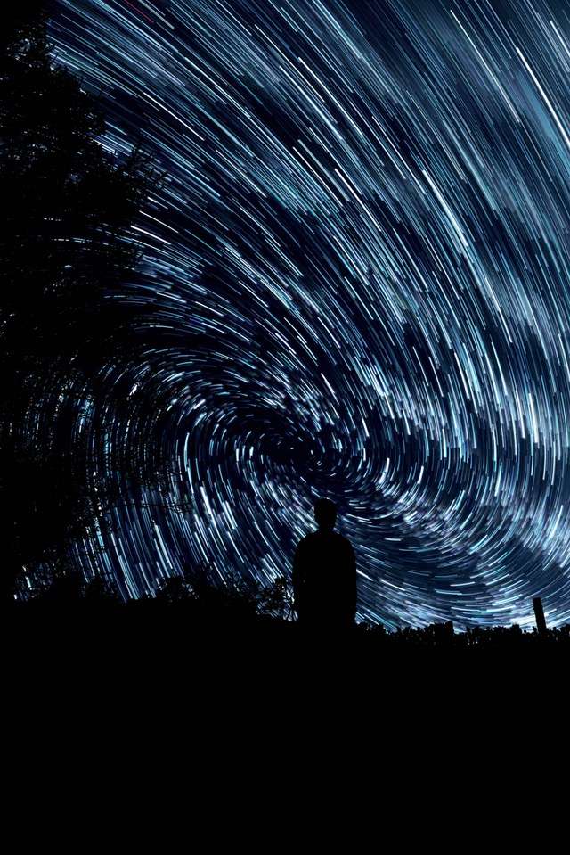

Astrophotography
Astrophotography is a specialized type of photography for recording photos of astronomical objects and large areas of the night sky. The first photograph of an astronomical object (the Moon) was taken in 1840, but it was not until the late 19th century that advances in technology allowed for detailed stellar photography. Besides being able to record the details of extended objects such as the Moon, Sun, and planets, astrophotography has the ability to image objects invisible to the human eye such as dim stars, nebulae, and galaxies. This is done by long time exposure since both film and digital cameras can accumulate and sum light photons over these long periods of time.
Photography revolutionized the field of professional astronomical research, with long time exposures recording hundreds of thousands of new stars and nebulae that were invisible to the human eye, leading to specialized and ever larger optical telescopes that were essentially big cameras designed to record light using photographic plates. Astrophotography had an early role in sky surveys and star classification but over time it has given way to more sophisticated equipment and techniques designed for specific fields of scientific research, with image sensors becoming just one of many forms of sensor.